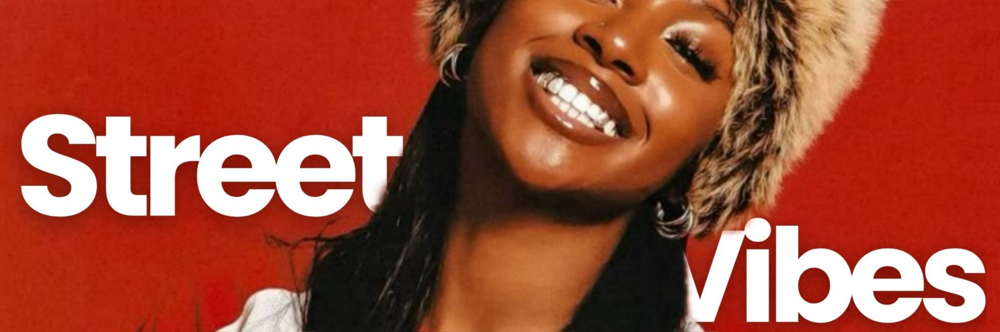

Bem-vinda ao StreetVibes!
O seu destino definitivo para o universo do streetwear feminino
Aqui, a moda é mais do que um estilo—é atitude, expressão e identidade. Nosso portal traz as últimas tendências, colaborações exclusivas, lançamentos de tênis, dicas de estilo e entrevistas com as vozes mais influentes da cena streetwear! Seja você uma entusiasta da moda urbana ou alguém que busca inspiração para montar looks autênticos e cheios de personalidade, este é o lugar certo para se conectar com a cultura que está dominando as ruas. Fique por dentro e faça parte dessa revolução fashion! 🌟